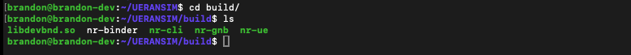

5G UE & RAN - Building UERANSIM¶
1. Requirements¶
| Requirements | Version |
|---|---|
| Ubuntu | 16.04 or later |
| CMake | 3.17 or later |
| gcc | 9.0.0 or later |
| g++ | 9.0.0 or later |
check the versions
lsb_release -a # ubuntu version check
cmake --version # cmake version check
gcc --version # gcc version check
g++ --version # g++ version check
2. Getting UERANSIM¶
Git Clone¶
Dependencies¶
update & upgrade apt
install dependencies
sudo apt install make
sudo apt install gcc
sudo apt install g++
sudo apt install libsctp-dev lksctp-tools
sudo apt install iproute2
sudo snap install cmake --classic
3. Building UERANSIM¶
After the build, you should be able to see the binaries under ~/UERANSIM/build folder. You should see the following files:
- nr-gnb | Main executable for 5G gNB (RAN)
- nr-ue | Main executable for 5G UE
- nr-cli | CLI tool for 5G gNB and UE
- nr-binder | A tool for utilizing UE's internet connectivity.
- libdevbnd.so | A dynamic library for nr-binder

4. Configuring UE and gNB¶
nr-ueaccepts a UE configuration file as a parameternr-gnbaccepts a gNB configuration file as a parameter
Under the config folder, there are example configuration files provided by UERANSIM. You can either edit them, or write your own files.
UE Configuration¶
I will be editing open5gs-ue.yaml file for my UE configuration. Refer to the configuration page below for details.
I modified supi, mcc, mnc value. Make sure your supi value has the corresponding mcc and mnc value.
supi: 'imsi-001010000000001'
# Mobile Country Code value of HPLMN
mcc: '001'
# Mobile Network Code value of HPLMN (2 or 3 digits)
mnc: '01'
Note that the subscription key, OP code, and amf values for registration is in this yaml file as well.
open5gs-ue.yaml
# IMSI number of the UE. IMSI = [MCC|MNC|MSISDN] (In total 15 digits)
supi: 'imsi-001010000000001'
# Mobile Country Code value of HPLMN
mcc: '001'
# Mobile Network Code value of HPLMN (2 or 3 digits)
mnc: '01'
# SUCI Protection Scheme : 0 for Null-scheme, 1 for Profile A and 2 for Profile B
protectionScheme: 0
# Home Network Public Key for protecting with SUCI Profile A
homeNetworkPublicKey: '5a8d38864820197c3394b92613b20b91633cbd897119273bf8e4a6f4eec0a650'
# Home Network Public Key ID for protecting with SUCI Profile A
homeNetworkPublicKeyId: 1
# Routing Indicator
routingIndicator: '0000'
# Permanent subscription key
key: '465B5CE8B199B49FAA5F0A2EE238A6BC'
# Operator code (OP or OPC) of the UE
op: 'E8ED289DEBA952E4283B54E88E6183CA'
# This value specifies the OP type and it can be either 'OP' or 'OPC'
opType: 'OPC'
# Authentication Management Field (AMF) value
amf: '8000'
# IMEI number of the device. It is used if no SUPI is provided
imei: '356938035643803'
# IMEISV number of the device. It is used if no SUPI and IMEI is provided
imeiSv: '4370816125816151'
gNB Configuration¶
I will be editing open5gs-gnb.yaml file for my gNB configuration. I modified mcc and mnc in here as well matching the ue config file.
AMF’s address must also be changed if you use gNB and AMF in different machines.
open5gs-gnb.yaml
mcc: '001' # Mobile Country Code value
mnc: '01' # Mobile Network Code value (2 or 3 digits)
nci: '0x000000010' # NR Cell Identity (36-bit)
idLength: 32 # NR gNB ID length in bits [22...32]
tac: 1 # Tracking Area Code
linkIp: 127.0.0.1 # gNB's local IP address for Radio Link Simulation (Usually same with local IP)
ngapIp: 127.0.0.1 # gNB's local IP address for N2 Interface (Usually same with local IP)
gtpIp: 127.0.0.1 # gNB's local IP address for N3 Interface (Usually same with local IP)
# List of AMF address information
amfConfigs:
- address: 127.0.0.5
port: 38412
# List of supported S-NSSAIs by this gNB
slices:
- sst: 1
# Indicates whether or not SCTP stream number errors should be ignored.
ignoreStreamIds: true
Connection Check¶
After all the configuration, make sure to check that all of the nodes in your setup (UE, gNB, and core network) can connect to each other over the network. One option is to ping it.
5. Starting UE and gNB¶
Run the following command to start the gNB.
Run the following command to start a UE.
You can also adjust the number of UEs. Below will start 10 UEs with their IMSI number incremented by one for each of the UEs (starting from the IMSI specified in the config file).
You can also override IMSI parameter in the config file over the command line.
Other CLI Commands¶
You can use nr-cli tool for both gNB and UEs.
You can query the current UE and gNBs in the environment using --dump option.

Now you know the names, so if you run nr-cli <node-name>, you can execute more commands about this node in an interactive shell.
If you enter commands, you can see the available commands. Note that the commands available for gNB are different from the ones for UE.

Restarting UERANSIM Cleanly¶
When there are duplicate entries of the identical UE like shown below, you can kill the process and start again.

Kill the process
Run again
Now there should only be one

RESOURCES: UERANSIM Official Documentation